amazon redesign.
ROLE
designer & researcher
TEAM
carmen li (me), jane dinh, lara canonizado, brianna fredeluces
DURATION
january 2022 to march 2022 (10 weeks)
overview
With its fast shipping, vast selection of products, and generous return policy, Amazon is the top platform when it comes to e-commerce. However, information regarding environmental impact tends to be hidden or overlooked. Our objective was to make design choices that can inspire and allow for more sustainable consumer decisions. With an expected 76.6 million households having a subscription to Amazon Prime in 2022 (Statista), this user base is a ripe opportunity to have a great impact on consumer behavior.
problem
To reach their goals of making more environmentally-conscious purchasing decisions, consumers need intuitive signals and transparent information about what goes into making and delivering the products.
The promise of fast and free delivery accompanied along with the lack of information about the consequential ecological impact enables online shoppers to easily prioritize convenience over making environmentally conscious decisions.
user research
To contextualize our problem space, we collected data. We wanted to gain insight on how increasing transparency would affect consumer behavior and sentiment and start honing in on a problem statement.
surveys
Our initial method was to deploy a survey to understand users’ feelings and knowledge regarding environmentalism, shopping/delivery preferences, and the likelihood of shifting purchasing decisions. Participants were able to answer using multiple choice, selection, and Likert scales. We were able to garner 71 responses.
interviews
To consolidate insight gained from the survey, we also conducted 4 user interviews to capture points in greater detail. The more open-ended nature of interviews provided deeper insight into users and gave them freedom to elaborate.
core findings
From our survey and interviews, we narrowed down these core findings:
●
80% of participants are Amazon Prime members, with 87% of these members being drawn to the free/faster shipping options the service provides.
●
Amazon is not being transparent enough about their environmental impacts, and feel positively towards the idea about the inclusion of such information.
●
While a majority of participants felt relatively strong about environmental issues (approximately 90%), these feelings don’t translate for questions relating to the impact of their purchasing habits. It seems that when it comes to shopping, convenience takes precedence over sustainability.
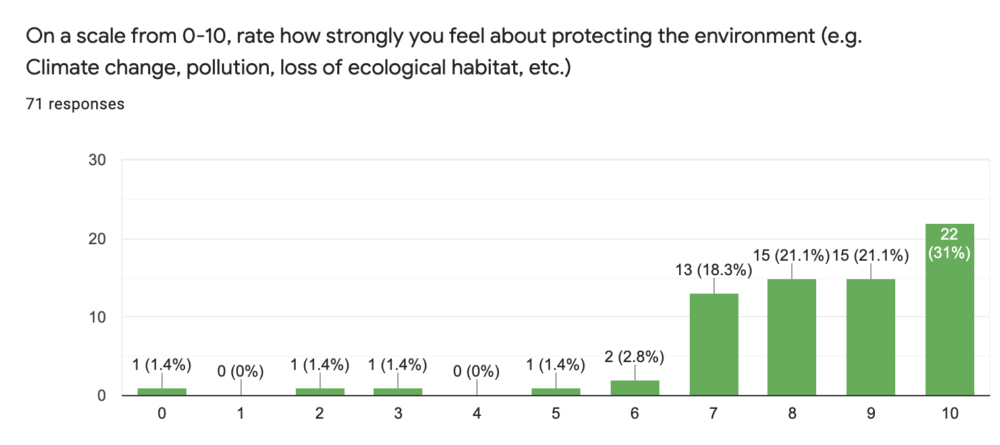 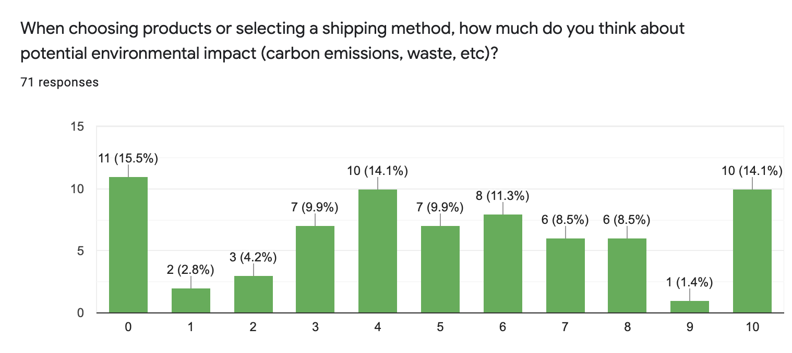
personas
From our user research, we observed that some participants used Amazon due to its convenience. At the same time, they wanted to make more sustainable consumer decisions but were inhibited by Amazon’s lack of pertinent information and options. We used these responses to craft the specific goals, needs, and possible pain points of the following user personas.
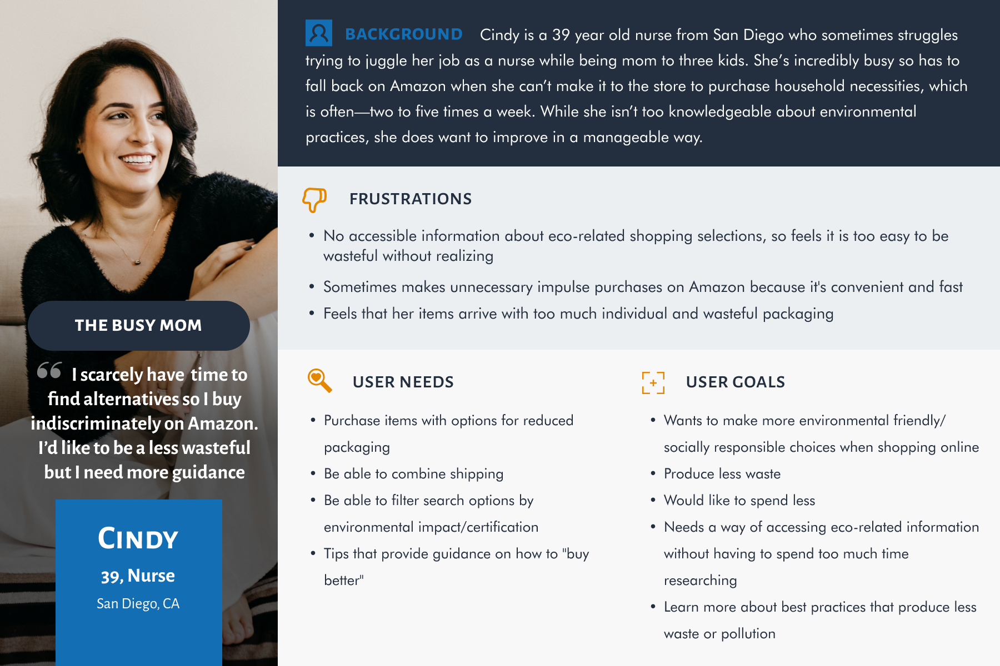 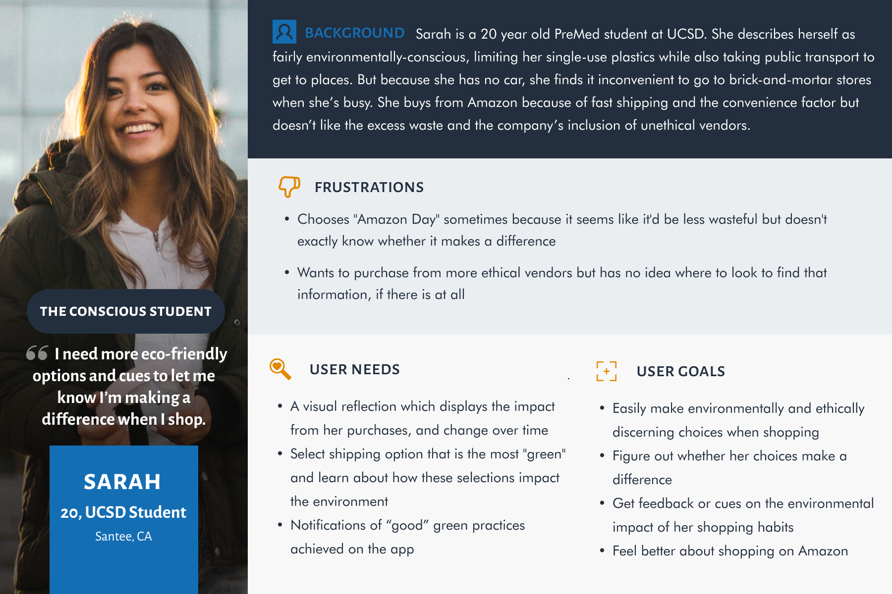
competitive analysis
We conducted thorough competitive analysis to experience first-hand which features work well in accomplishing our goal. The competitors included both commerce brands and environmental/ethical brands. Here's a few of the brands we audited and their design approaches.
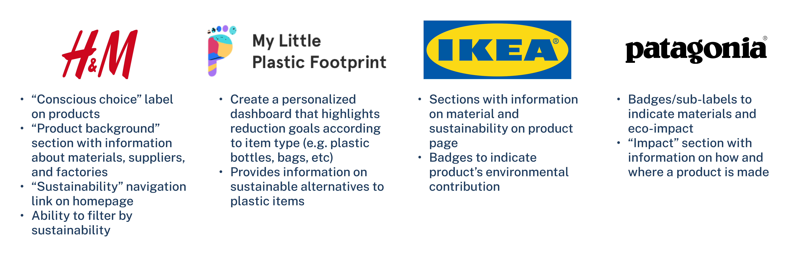
user flows
To meet the needs of the users, we explored four different flows with core functionalities of Amazon.
flow 1: filter search and product page
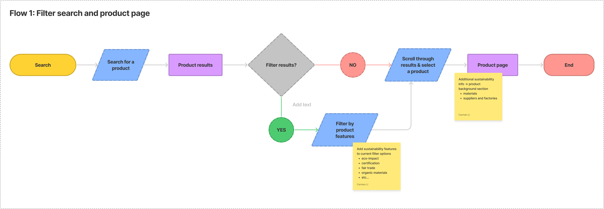In this flow, we extend Amazon’s search process to include more sustainability features to filter by. It’s based on all our personas, who express the need for the ability to filter for their desired products. We also add a “product background” section to the individual product pages. This flow provides a solution to our problem statement because the additional information and ability to filter by sustainability would allow users to make informed purchases with greater transparency.
flow 2: search with eco-mode toggle
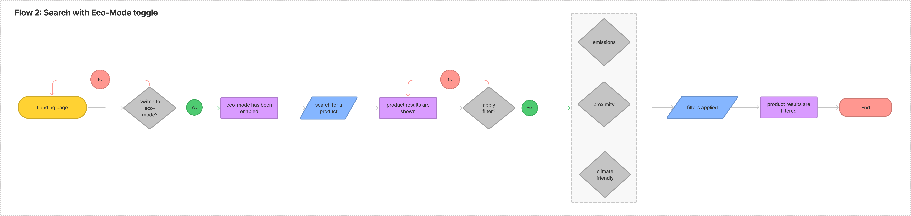In this flow, we implement an Eco-mode toggle such that when enabled on the homepage, it changes the featured products to eco-certified products. This is targeted for users who would like to narrow down their search to only certified or “climate pledge friendly” products.
flow 3: checkout shipping selection
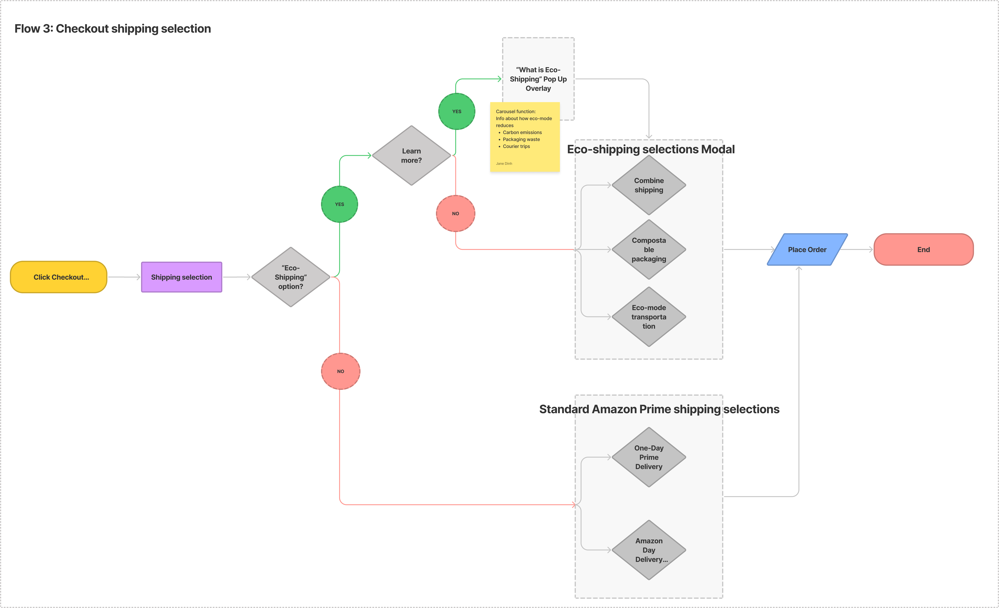In this flow, we focus on redesigning the shipping selection process by adding an “eco-shipping” option. This gives the users the ability to combine shipping, receive items in compostable/recyclable packaging, and select more fuel-efficient transportation methods. Because we are motivated by how Amazon Prime users tend to select the fastest and most convenient option, we believe that providing alternative options would allow environmentally-conscious users across our presented personas to make better shipping decisions.
flow 4: profile dashboard
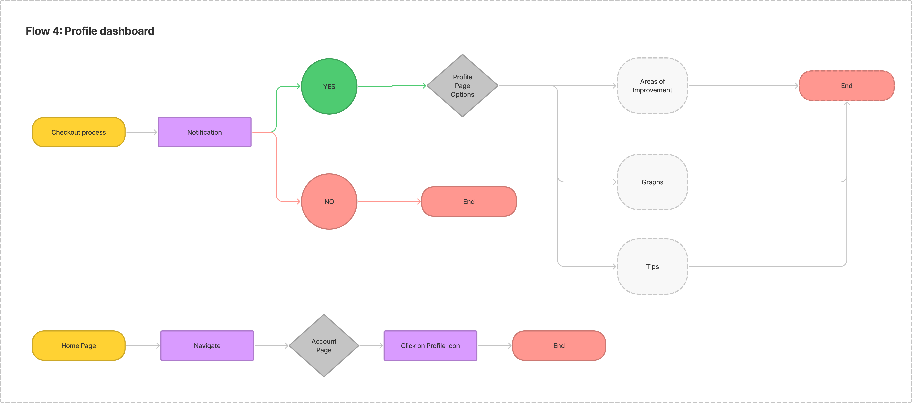In this flow, we incorporate more information about a user’s contributions to sustainability on their profile dashboard. The redesigned page will contain personalized data, such as areas of improvement, graphs on impact of their purchases, and tips on how to make more environmentally friendly choices.
lo-fi prototypes
Using these user flows, we consolidated the ideas into sketches and then transformed them into low fidelity prototypes.
prototype a: homepage and search
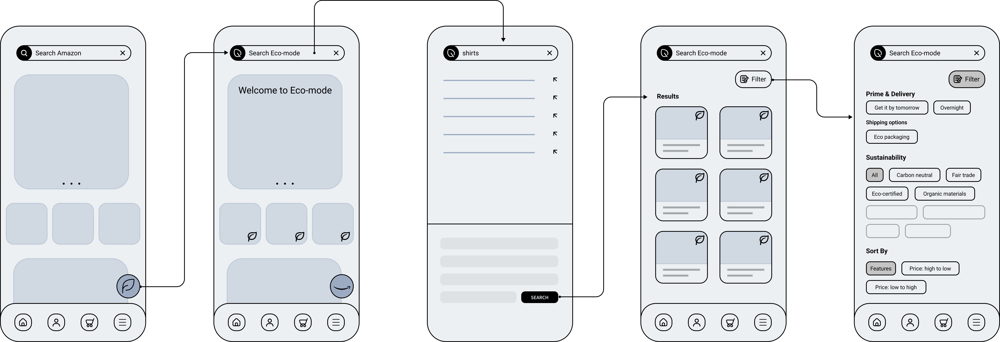For Prototype A, we decided to merge Flow 1 and Flow 2 because both dealt with extending the search process. With the Eco-mode toggle, the homepage will be automatically filtered and users will be presented with a selection of environmentally friendly products to choose from. They are also able to apply filters to search through these products. Thumbnails of items will have a mini leaf icon as indication.
prototype b: checkout and shipping
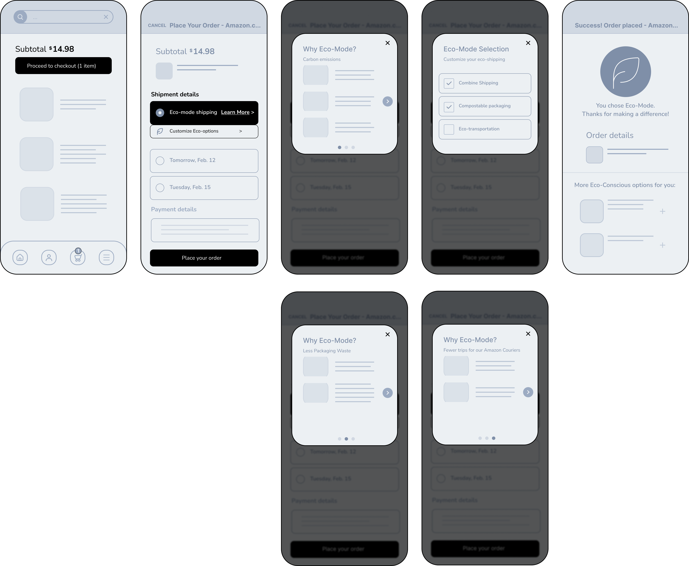Prototype B closely follows Flow 3. In the checkout process, shipping selection takes precedence to emphasize the new “eco” features. Users may opt-in to learn more or customize specific details such as combining shipping and compostable packaging through modal overlays.
prototype c: profile dashboard
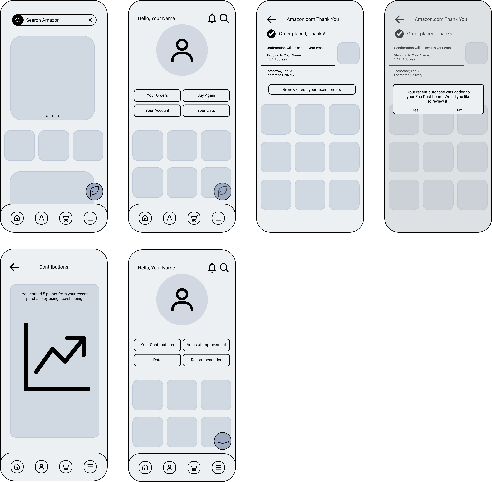Prototype C closely follows Flow 4. While the user is in Eco-mode, Amazon’s account page will be more geared towards information regarding “green” purchases.
user testing
We conducted a round of user testing to determine our next steps in iterating the design. We selected four participants who used Amazon Prime and identified as relatively eco-conscious. For each prototype, we observed how successfully the users performed related tasks and gathered responses on likes, dislikes, suggestions, and whether they would use the presented feature.
findings
●
4/4 users preferred Prototypes A and B, because there was a sense of familiarity with the functionalities, eliminating the need for onboarding.
●
Prototype C is a bit less intuitive and the contribution it has on convincing users to make more eco-conscious choices isn’t as direct.
●
There was common sentiment in favor of integrating “Eco-mode” into Amazon rather than having a discrete “Eco-mode”. In the current prototypes, users must opt-in to a separate mode and this could discourage potential users from committing themselves to it.
next steps
We will iterate on all the prototypes by integrating the “eco” features into the existing Amazon interface because we believe that having a familiar UX could be a more effective and user-friendly approach to encourage more sustainable consumer behavior. Even though users did not express a strong likelihood of using the “eco” dashboard feature as seen in Prototype C, we plan to consider a better way to present this information because allowing users to reflect on their consumer behavior is still a viable feature. There was also confusion as to why certain options exists or what they meant, so we will work on providing accurate labeling and cues for the significance of features.
hi-fi prototypes & iterations
In the process of converting our low-fidelity prototypes into high-fidelity prototypes, we gathered insights from another round of user testing. We created alternate screens for all the different flows and asked users for feedback on what works and what their preferred versions are.
before & after: homepage and search flow
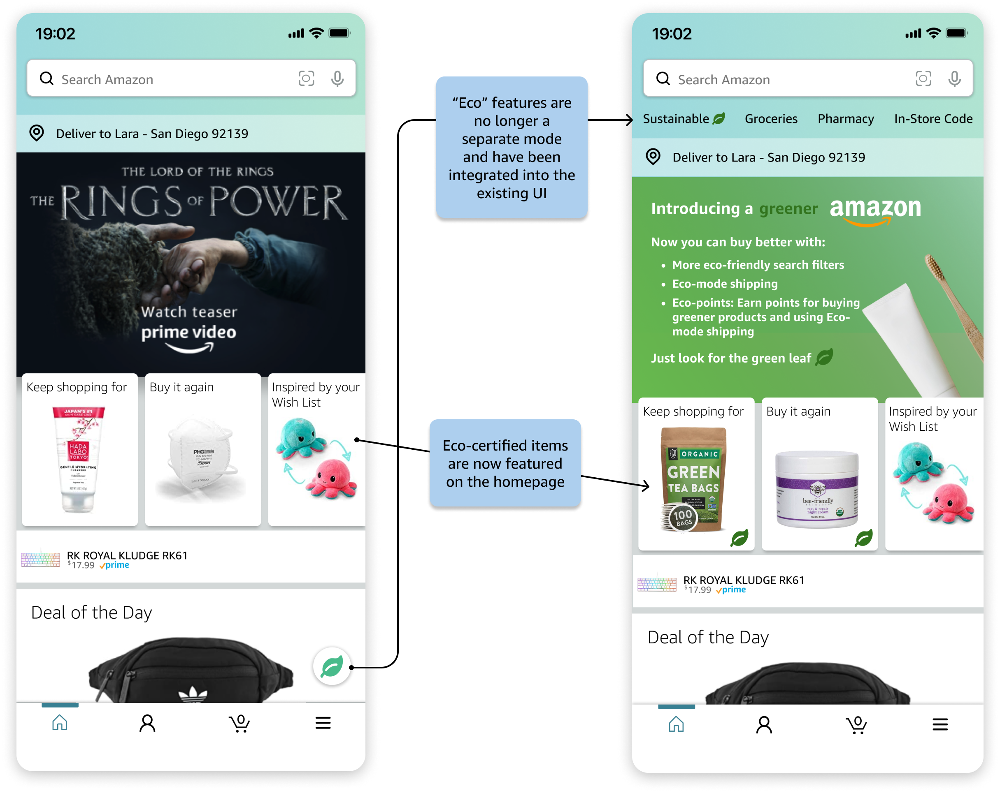 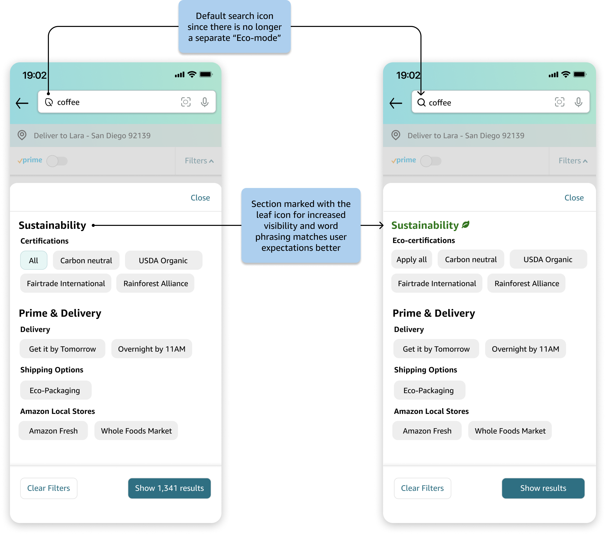 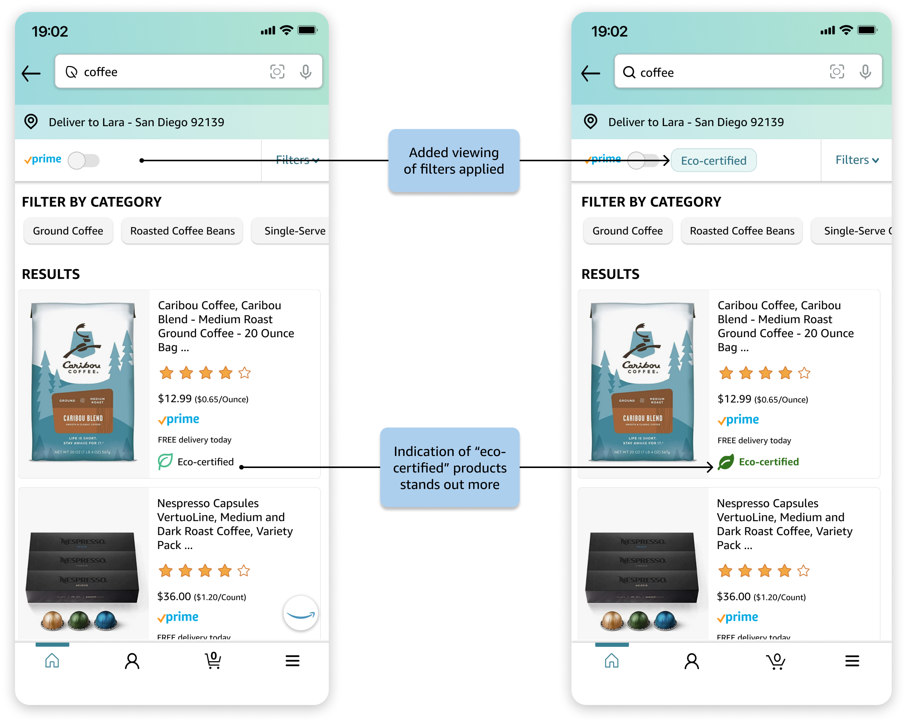before & after: checkout and shipping flow
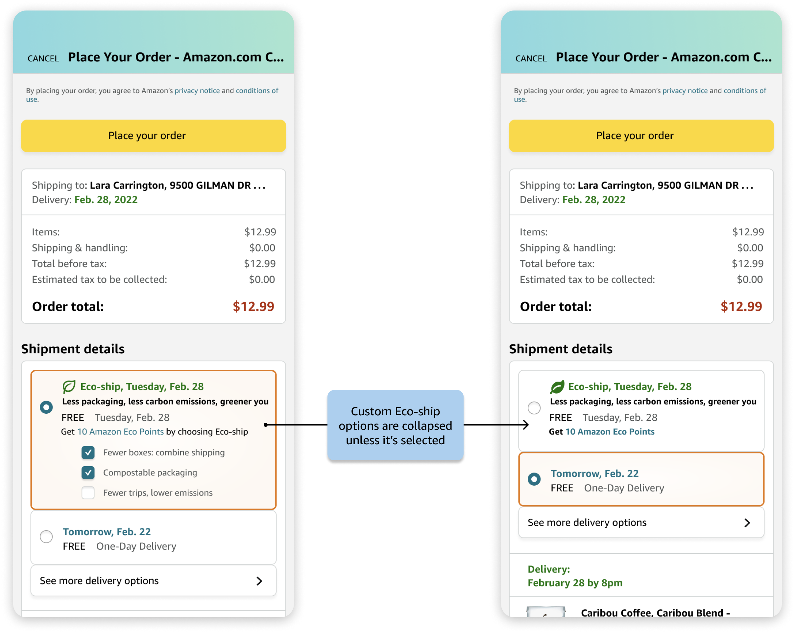 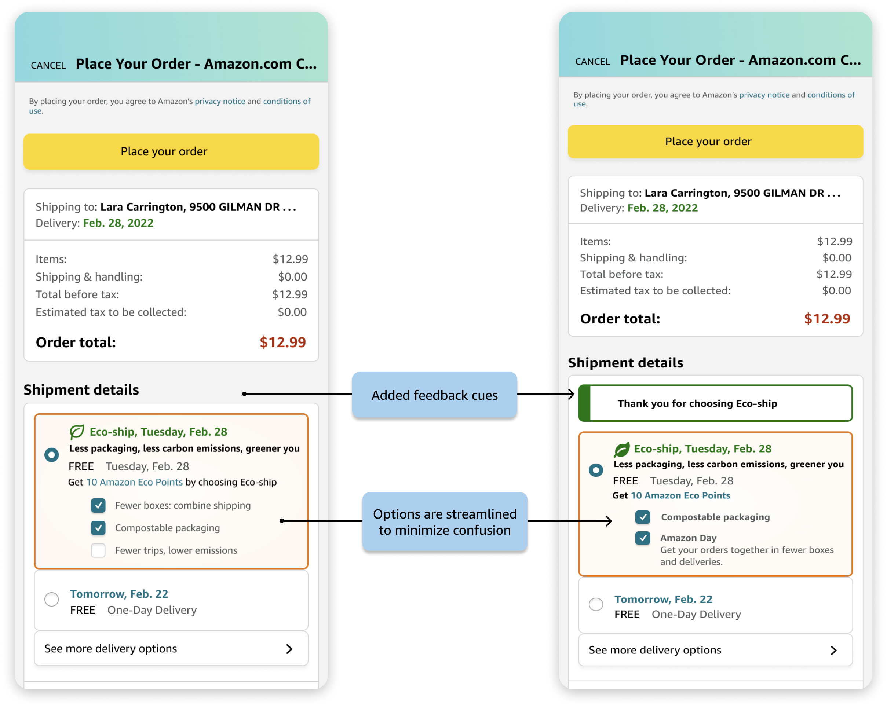before & after: profile dashboard flow
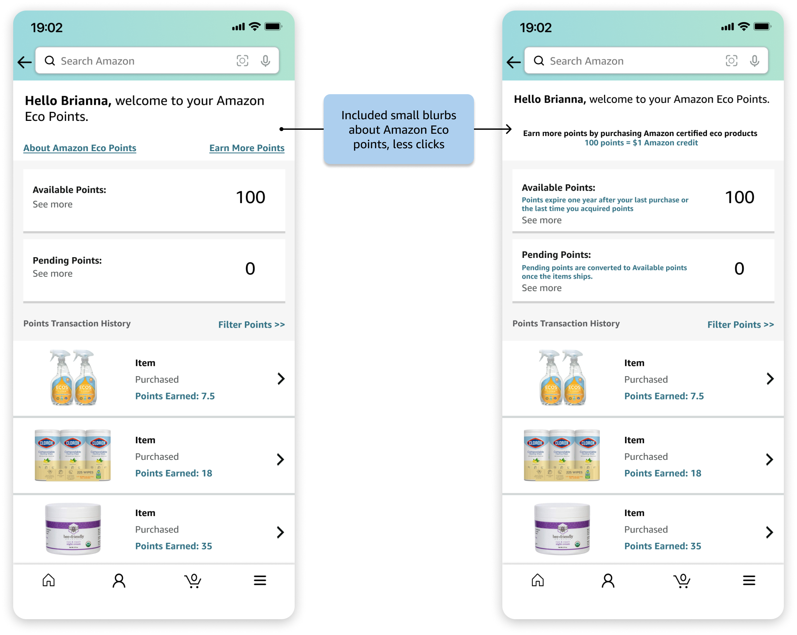 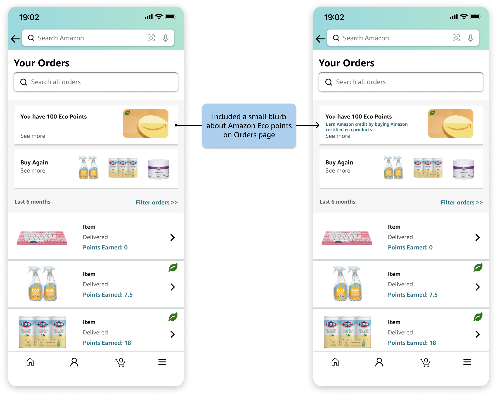final designs
Here are our final interactive high fidelity prototypes: